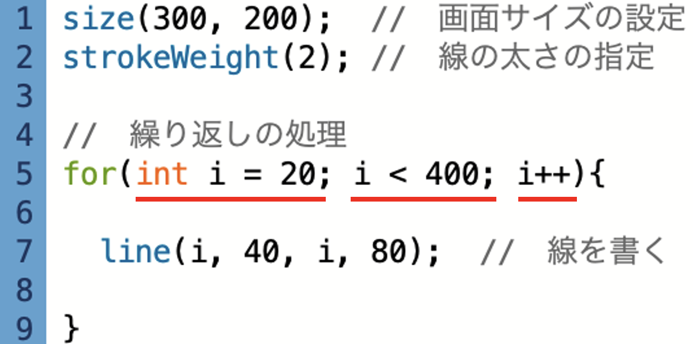

第4章 変数
STEP3：繰り返し文② 解説
問題のコード

プログラムの実行画面
解説
(1) int型の変数iを宣言し、初期値20と指定してください。
正解：
int i =20;
変数の宣言と初期値の代入は、まとめて記述することができる。
(2) iの値が400未満のとき実行するように指定してください。
正解：
i < 400;
/
i<=399;
初期値20のiが400未満の値の間は、処理を繰り返すということを表す。
条件式は、
不等号
を用いて記述します。
(3) iの値が8ずつ増えていくように指定してください。
正解：
i+=8
値を変動する場合は、
変数名
正負の符号
= 数値
次の問題へ